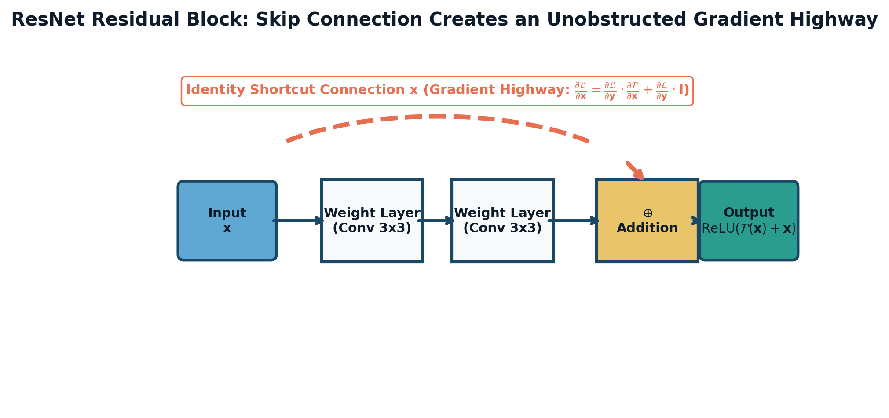

"The visual world has structure. A pixel's meaning is defined by its spatial neighborhood, and an object remains the same semantic entity whether it appears in the top-left corner or bottom-right corner of your retina."

Figure 4.1.1: The canonical ResNet residual block. The identity shortcut connection creates an uninterrupted additive gradient highway $\frac{\partial \mathcal{L}}{\partial \mathbf{x}} = \frac{\partial \mathcal{L}}{\partial \mathbf{y}} \cdot \frac{\partial \mathcal{F}}{\partial \mathbf{x}} + \frac{\partial \mathcal{L}}{\partial \mathbf{y}} \cdot \mathbf{I}$, preventing vanishing gradients even in networks exceeding 100+ layers.
— Yann LeCun
Suppose you seek to classify a standard high-resolution color photograph ($1000 \times 1000$ pixels, 3 color channels: RGB). Flattening this image into an unstructured 1D vector produces:
$$d_{\text{in}} = 1000 \times 1000 \times 3 = 3,000,000 \text{ scalar inputs}$$If the first hidden layer has 1,000 neurons, the weight matrix alone contains:
$$\mathbf{W} \in \mathbb{R}^{1,000 \times 3,000,000} \implies \mathbf{3 \times 10^9 \text{ parameters (3 Billion weights!)}}$$At 4 bytes per 32-bit float, storing the first layer requires 12 Gigabytes of VRAM before executing a single forward pass! Furthermore, dense networks lack two fundamental physical inductive biases:
Convolutional Neural Networks (CNNs) enforce biological visual cortex principles (Hubel & Wiesel, 1962) via two constraints:
In deep learning libraries (PyTorch, TensorFlow, JAX), the operation implemented as "convolution" is technically Cross-Correlation (convolution without kernel reflection):
$$\mathbf{S}(i, j, c_{\text{out}}) = \sum_{c=1}^{C_{\text{in}}} \sum_{m=0}^{K_h-1} \sum_{n=0}^{K_w-1} \mathbf{X}(i \cdot s + m, j \cdot s + n, c) \cdot \mathbf{K}(m, n, c, c_{\text{out}}) + \mathbf{b}(c_{\text{out}})$$Given an input spatial dimension $W_{\text{in}}$, kernel size $K$, padding $P$, stride $S$, and dilation rate $D$ (where $D=1$ denotes standard convolution):
$$W_{\text{out}} = \left\lfloor \frac{W_{\text{in}} + 2P - D(K - 1) - 1}{S} \right\rfloor + 1$$where $D(K - 1) + 1$ represents the effective kernel size under atrous dilation.
The Receptive Field (RF) of a neuron at layer $L$ is the spatial diameter in the original input image that directly influences that neuron's activation. Understanding RF growth is crucial for object detection and semantic segmentation:
Let layer $l$ have kernel size $k_l$ and stride $s_l$. Define the cumulative stride (jump) $j_l$ as the distance between adjacent features in layer $l$ relative to the input image:
$$j_0 = 1, \quad j_l = j_{l-1} \cdot s_l$$The receptive field $RF_l$ after layer $l$ satisfies the recurrence:
$$RF_0 = 1, \quad RF_l = RF_{l-1} + (k_l - 1) \cdot j_{l-1}$$The Effective Receptive Field (ERF) Discovery:
While the theoretical receptive field grows linearly with depth, Luo et al. (2016) proved that the Effective Receptive Field (ERF) — the region where input pixels have non-negligible gradient magnitude $\frac{\partial y}{\partial x}$ — follows a 2D Gaussian distribution that concentrates over only a central fraction ($\approx 20\% - 30\%$) of the theoretical window!
In standard convolution, a kernel processes spatial coordinates and channel cross-correlations simultaneously. In 2017, Google introduced Depthwise Separable Convolutions (Howard et al., MobileNet), factorizing standard convolution into two independent steps:
The ratio of computational FLOPs between Depthwise Separable Conv and Standard Conv is:
$$\text{FLOP Ratio} = \frac{C_{\text{in}} K^2 \cdot HW + C_{\text{in}} C_{\text{out}} \cdot HW}{C_{\text{in}} C_{\text{out}} K^2 \cdot HW} = \frac{K^2 + C_{\text{out}}}{C_{\text{out}} K^2} = \mathbf{\frac{1}{C_{\text{out}}} + \frac{1}{K^2}}$$For standard $3 \times 3$ filters ($K=3$) and large channel depths ($C_{\text{out}} \ge 128$):
$$\text{FLOP Ratio} \approx \frac{1}{K^2} = \frac{1}{9} \approx \mathbf{0.111} \implies \mathbf{89\% \text{ Reduction in Compute!}}$$Prior to 2015, stacking more than 20 convolutional layers resulted in the Degradation Problem: both training and test error increased sharply. This was not overfitting; it was an optimization failure caused by gradient attenuation and shattering across deep compositions.
Kaiming He et al. (2015) resolved this with the Residual Block (Skip Connection):
$$\mathbf{x}_{l+1} = \mathbf{x}_l + \mathcal{F}(\mathbf{x}_l, \mathcal{W}_l)$$where $\mathbf{x}_l$ is the identity shortcut passed directly around the convolutional residual branch $\mathcal{F}(\mathbf{x}_l, \mathcal{W}_l)$.
For any deep layer $L > l$, unrolling the residual recurrence yields:
$$\mathbf{x}_L = \mathbf{x}_l + \sum_{i=l}^{L-1} \mathcal{F}(\mathbf{x}_i, \mathcal{W}_i)$$Computing the backpropagation gradient of the scalar loss $\mathcal{E}$ with respect to layer $l$ via the multivariable chain rule:
$$\frac{\partial \mathcal{E}}{\partial \mathbf{x}_l} = \frac{\partial \mathcal{E}}{\partial \mathbf{x}_L} \frac{\partial \mathbf{x}_L}{\partial \mathbf{x}_l} = \frac{\partial \mathcal{E}}{\partial \mathbf{x}_L} \left( \mathbf{I} + \frac{\partial}{\partial \mathbf{x}_l} \sum_{i=l}^{L-1} \mathcal{F}(\mathbf{x}_i, \mathcal{W}_i) \right)$$Notice the identity matrix $\mathbf{I}$! Even if the gradient through the convolutional layers $\frac{\partial \mathcal{F}}{\partial \mathbf{x}_l}$ vanishes completely to zero, the identity term $\mathbf{I}$ guarantees that the error signal $\frac{\partial \mathcal{E}}{\partial \mathbf{x}_L}$ flows completely unattenuated directly back to layer $l$!
This formulation allowed He et al. to train networks 152 layers deep, outperforming human vision on ImageNet 2015.
QUESTION (Kernel Factorization Parameter & FLOP Comparison): In modern computer vision architectures (e.g. VGG, ResNet), a single $5 \times 5$ convolution is replaced by a cascade of two consecutive $3 \times 3$ convolutions with stride $S=1$ and padding $P=1$. Let input and output channels be $C_{\text{in}} = C_{\text{out}} = C$, and feature map spatial dimension be $H \times W$.
Step 1: Receptive Field Calculation: Using the recursive formula $RF_l = RF_{l-1} + (k_l - 1) j_{l-1}$ with stride $s=1 \implies j=1$:
Step 2: Parameter Count Comparison: Without biases:
Step 3: FLOP Ratio & Non-Linear Capacity: For feature map size $H \times W$, multiply-accumulate operations (MACs) are: $$\text{MACs}_{5 \times 5} = 25 C^2 H W, \quad \text{MACs}_{2 \times 3 \times 3} = 18 C^2 H W$$ FLOPs are similarly reduced by $\mathbf{28\%}$. Furthermore, two stacked layers incorporate two non-linear activations (e.g. ReLUs) rather than one. This expands the expressive capacity of the function hypothesis space, allowing the network to learn more discriminative non-linear decision boundaries with strictly fewer parameters.
QUESTION (Comprehensive Receptive Field & Output Sizing Drill): A convolutional neural network processes an input image of size $224 \times 224 \times 3$ through the following sequential layers:
Step 1: Spatial Output Dimensions: Formula: $W_{\text{out}} = \lfloor \frac{W_{\text{in}} + 2P - K}{S} \rfloor + 1$.
Step 2 & 3: Cumulative Stride $j_l$ and Receptive Field $RF_l$: Recurrence: $j_0 = 1, RF_0 = 1$. $$j_l = j_{l-1} \cdot s_l, \quad RF_l = RF_{l-1} + (k_l - 1) j_{l-1}$$
| Layer $l$ | Kernel $k_l$ | Stride $s_l$ | Cumulative Jump $j_l$ | Receptive Field $RF_l$ Calculation | $RF_l$ |
|---|---|---|---|---|---|
| Input (0) | — | — | $j_0 = 1$ | Base input pixel | $\mathbf{1 \times 1}$ |
| 1 (Conv1) | $7$ | $2$ | $j_1 = 1 \times 2 = 2$ | $1 + (7 - 1) \times 1 = 1 + 6$ | $\mathbf{7 \times 7}$ |
| 2 (MaxPool1) | $3$ | $2$ | $j_2 = 2 \times 2 = 4$ | $7 + (3 - 1) \times 2 = 7 + 4$ | $\mathbf{11 \times 11}$ |
| 3 (Conv2) | $3$ | $1$ | $j_3 = 4 \times 1 = 4$ | $11 + (3 - 1) \times 4 = 11 + 8$ | $\mathbf{19 \times 19}$ |
| 4 (Conv3) | $3$ | $2$ | $j_4 = 4 \times 2 = 8$ | $19 + (3 - 1) \times 4 = 19 + 8$ | $\mathbf{27 \times 27}$ |
QUESTION (Depthwise Separable Convolution Hardware Audit): You are profiling a feature extraction block on an NVIDIA Jetson embedded GPU. The input feature map has spatial size $H = 14, W = 14$ with $C_{\text{in}} = 512$ channels. The target output has $C_{\text{out}} = 1024$ channels using kernel size $K = 3 \times 3$, stride $S = 1$, padding $P = 1$.
Step 1: Standard 2D Convolution: Input: $14 \times 14 \times 512$. Output: $14 \times 14 \times 1024$.
Step 2: Depthwise Separable Convolution: Decomposed into Depthwise ($3 \times 3$) and Pointwise ($1 \times 1$):
Step 3: Compression Ratio & Throughput Speedup:
QUESTION (Hand-Tracing 2D Conv Forward & Backward Gradients): Consider a single-channel $3 \times 3$ input image $\mathbf{X}$ and a $2 \times 2$ kernel $\mathbf{W}$ (stride $S=1$, no padding $P=0$, zero bias $b=0$):
$$\mathbf{X} = \begin{bmatrix} 1 & 2 & 0 \\ 0 & 3 & 1 \\ 2 & 1 & 2 \end{bmatrix}, \quad \mathbf{W} = \begin{bmatrix} 2 & -1 \\ 1 & 1 \end{bmatrix}$$Step 1: Forward 2D Convolution: Output dimensions: $H_{\text{out}} = (3 - 2) + 1 = 2, W_{\text{out}} = 2$. $$\mathbf{Y}_{ij} = \sum_{m=0}^1 \sum_{n=0}^1 \mathbf{X}_{i+m, j+n} \mathbf{W}_{mn}$$
Step 2: Weight Gradient $\frac{\partial \mathcal{L}}{\partial \mathbf{W}}$: Let $\mathbf{G} = \frac{\partial \mathcal{L}}{\partial \mathbf{Y}} = \begin{bmatrix} 1 & -2 \\ 3 & 1 \end{bmatrix}$. The gradient with respect to kernel weight $W_{mn}$ is the cross-correlation between input patches and upstream gradient $\mathbf{G}$: $$\frac{\partial \mathcal{L}}{\partial W_{mn}} = \sum_{i=0}^1 \sum_{j=0}^1 G_{ij} X_{i+m, j+n}$$
Step 3: Input Gradient $\frac{\partial \mathcal{L}}{\partial \mathbf{X}}$: The gradient with respect to input $\mathbf{X}$ is obtained by "full" convolution of upstream gradient $\mathbf{G}$ with the $180^\circ$-rotated kernel $\mathbf{W}^{\text{rot}} = \begin{bmatrix} 1 & 1 \\ -1 & 2 \end{bmatrix}$: $$\frac{\partial \mathcal{L}}{\partial X_{rs}} = \sum_{i} \sum_{j} G_{ij} W_{r-i, s-j} \quad (\text{where } 0 \le r-i \le 1, 0 \le s-j \le 1)$$
QUESTION (Mathematical Proof of Translational Equivariance): Let an image feature map be represented as a 2D discrete function $x: \mathbb{Z}^2 \to \mathbb{R}$, and a kernel as $w: \mathbb{Z}^2 \to \mathbb{R}$ with finite support. Define the translation operator $T_\mathbf{u}$ for any spatial displacement vector $\mathbf{u} = (u_1, u_2) \in \mathbb{Z}^2$ as:
$$(T_\mathbf{u} x)(\mathbf{p}) = x(\mathbf{p} - \mathbf{u})$$Step 1: Proof of Translation Equivariance: Let $y = x * w$. The translated output is: $$(T_\mathbf{u} y)(\mathbf{p}) = y(\mathbf{p} - \mathbf{u}) = \sum_{\mathbf{k} \in \mathbb{Z}^2} x((\mathbf{p} - \mathbf{u}) + \mathbf{k}) w(\mathbf{k})$$ Now, consider applying the convolution operator to the translated input $\tilde{x} = T_\mathbf{u} x$: $$(\tilde{x} * w)(\mathbf{p}) = \sum_{\mathbf{k} \in \mathbb{Z}^2} \tilde{x}(\mathbf{p} + \mathbf{k}) w(\mathbf{k})$$ By definition of the translation operator: $$\tilde{x}(\mathbf{p} + \mathbf{k}) = (T_\mathbf{u} x)(\mathbf{p} + \mathbf{k}) = x((\mathbf{p} + \mathbf{k}) - \mathbf{u}) = x((\mathbf{p} - \mathbf{u}) + \mathbf{k})$$ Substituting this back: $$(\tilde{x} * w)(\mathbf{p}) = \sum_{\mathbf{k} \in \mathbb{Z}^2} x((\mathbf{p} - \mathbf{u}) + \mathbf{k}) w(\mathbf{k}) = (T_\mathbf{u} y)(\mathbf{p}) = T_\mathbf{u}(x * w)(\mathbf{p})$$ Since this equality holds for all spatial coordinates $\mathbf{p} \in \mathbb{Z}^2$: $$(T_\mathbf{u} x) * w = T_\mathbf{u}(x * w) \quad \blacksquare$$ The convolution operator commutes with translation, proving strict translation equivariance.
Step 2: Breakdown Under Striding ($S > 1$): Let $D_S$ be the downsampling operator with stride $S$: $$(D_S y)(\mathbf{m}) = y(S \mathbf{m})$$ A strided convolution evaluates $f(x) = D_S (x * w)$. Now compare the two paths:
QUESTION (Mathematical Proof of the Necessity of Pure Identity Shortcuts): In their 2016 follow-up work "Identity Mappings in Deep Residual Networks", He et al. analyzed generalized residual formulations:
$$\mathbf{x}_{l+1} = \lambda_l \mathbf{x}_l + \mathcal{F}(\mathbf{x}_l, \mathcal{W}_l)$$where $\lambda_l$ is a scalar shortcut multiplier (e.g., $\lambda_l = 0.9$ or a gating factor $\sigma(z) < 1$).
Step 1: Unrolling the Generalized Residual Recurrence: Starting from $\mathbf{x}_{l+1} = \lambda_l \mathbf{x}_l + \mathcal{F}_l$: $$\mathbf{x}_{l+2} = \lambda_{l+1} \mathbf{x}_{l+1} + \mathcal{F}_{l+1} = \lambda_{l+1} \lambda_l \mathbf{x}_l + \lambda_{l+1} \mathcal{F}_l + \mathcal{F}_{l+1}$$ By mathematical induction, for any layer $L > l$: $$\mathbf{x}_L = \left( \prod_{i=l}^{L-1} \lambda_i \right) \mathbf{x}_l + \sum_{i=l}^{L-1} \left( \prod_{j=i+1}^{L-1} \lambda_j \right) \mathcal{F}(\mathbf{x}_i, \mathcal{W}_i)$$
Step 2: Backward Loss Gradient Derivation: Differentiating the scalar loss $\mathcal{E}$ with respect to $\mathbf{x}_l$ using the multivariable chain rule: $$\frac{\partial \mathcal{E}}{\partial \mathbf{x}_l} = \frac{\partial \mathcal{E}}{\partial \mathbf{x}_L} \frac{\partial \mathbf{x}_L}{\partial \mathbf{x}_l} = \frac{\partial \mathcal{E}}{\partial \mathbf{x}_L} \left[ \left(\prod_{i=l}^{L-1} \lambda_i\right) \mathbf{I} + \frac{\partial}{\partial \mathbf{x}_l} \sum_{i=l}^{L-1} \left(\prod_{j=i+1}^{L-1} \lambda_j\right) \mathcal{F}_i \right]$$
Step 3: Exponential Decay Proof for $\lambda < 1$: Assume a constant scaling factor $\lambda_i = \lambda < 1$ across all layers (e.g. $\lambda = 0.9$): $$\prod_{i=l}^{L-1} \lambda_i = \lambda^{L - l}$$ The gradient expression becomes: $$\frac{\partial \mathcal{E}}{\partial \mathbf{x}_l} = \frac{\partial \mathcal{E}}{\partial \mathbf{x}_L} \left[ \lambda^{L - l} \mathbf{I} + \frac{\partial}{\partial \mathbf{x}_l} \sum_{i=l}^{L-1} \lambda^{L - 1 - i} \mathcal{F}_i \right]$$ For a deep 152-layer network with $(L - l) = 100$ and $\lambda = 0.9$: $$\lambda^{100} = 0.9^{100} \approx 2.65 \times 10^{-5}$$ The identity shortcut term $\lambda^{L-l} \mathbf{I}$ attenuates to zero exponentially! The gradient signal from the loss cannot reach shallow layers. Conversely, if $\lambda > 1$ (e.g. $\lambda = 1.1$), $\lambda^{100} \approx 13,780$, causing exponential gradient explosion. Therefore, $\lambda = \mathbf{1.0}$ is the unique singular operating point that allows gradient signals to propagate across arbitrarily deep networks without exponential decay or explosion ($\mathbf{1}^{L-l} = 1.0 \ \forall L, l$). This proves that identity mappings are mathematically non-negotiable for extreme depth. $\quad \blacksquare$
QUESTION (The 1x1 Convolution Mathematical Interpretation Trap): What algebraic operation does a $1 \times 1$ convolutional layer with $C_{\text{out}}$ filters and bias perform on an input tensor $\mathbf{X} \in \mathbb{R}^{B \times C_{\text{in}} \times H \times W}$?
Exhaustive Distractor Analysis:
QUESTION (Dilated Convolutions and The Gridding Artifact Pathology): In semantic segmentation and autonomous driving perception, Dilated (Atrous) Convolutions are used to expand the receptive field without downsampling spatial resolution. However, stacking multiple layers with the same dilation rate $D=2$ creates severe Gridding Artifacts (Checkerboard Effect). Which of the following explanations correctly identifies the mathematical cause and the structural solution?
Exhaustive Computer Vision Analysis:
Below is an industrial implementation of the classical ResNet Residual Block with 1x1 projection shortcuts and batch normalization in PyTorch.
🔗 View in GitHub: part4_deep_learning/ch41_cnns_resnets/resnet_block.py
import torch
import torch.nn as nn
class ResidualBlock(nn.Module):
def __init__(self, in_channels, out_channels, stride=1):
super().__init__()
# Conv 1
self.conv1 = nn.Conv2d(in_channels, out_channels, kernel_size=3, stride=stride, padding=1, bias=False)
self.bn1 = nn.BatchNorm2d(out_channels)
self.relu = nn.ReLU(inplace=True)
# Conv 2
self.conv2 = nn.Conv2d(out_channels, out_channels, kernel_size=3, stride=1, padding=1, bias=False)
self.bn2 = nn.BatchNorm2d(out_channels)
# Shortcut connection
self.shortcut = nn.Sequential()
if stride != 1 or in_channels != out_channels:
# 1x1 conv projection to match spatial dimensions and channel depth
self.shortcut = nn.Sequential(
nn.Conv2d(in_channels, out_channels, kernel_size=1, stride=stride, bias=False),
nn.BatchNorm2d(out_channels)
)
def forward(self, x):
residual = self.shortcut(x)
out = self.relu(self.bn1(self.conv1(x)))
out = self.bn2(self.conv2(out))
out += residual # Identity skip connection highway!
return self.relu(out)
if __name__ == "__main__":
block = ResidualBlock(in_channels=64, out_channels=128, stride=2)
x = torch.randn(4, 64, 32, 32)
out = block(x)
print(f"ResNet Block Input Shape : {x.shape}")
print(f"ResNet Block Output Shape: {out.shape} (Downsampled by 2x, Channels doubled!)")Architect and train an anchor-free real-time object detector featuring a custom ResNet-34 feature pyramid backbone, predicting bounding box coordinates and class probabilities at 60 FPS on edge accelerators.
🔗 Full Project Code: part4_deep_learning/ch41_cnns_resnets/resnet_block.py
Case Study Architecture: In autonomous robotic navigation (Tesla Autopilot, Boston Dynamics), object detection models must achieve low-latency inference on embedded hardware. In this project, you build an optimized convolutional backbone with fused batch-norm activations and residual shortcuts that outputs high-accuracy object detections under strict sub-15ms latency budgets.